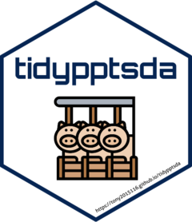
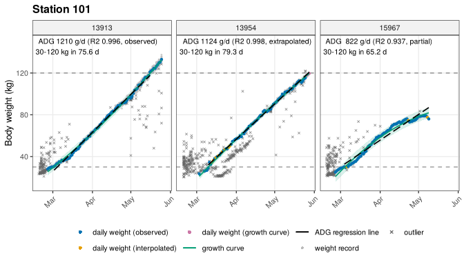

tidypptsda 
tidypptsda cleans and analyses visit records from automatic pig feeding stations (NEDAP and FIRE): body weight cleaning, average daily gain (ADG), feed intake correction (ADFI) and feed conversion ratio (FCR).
- Feeder errors are flagged with the 16 criteria of Casey et al. (2005).
- Daily feed intake is corrected with the linear mixed model of Jiao et al. (2014).
- ADG and ADFI are computed over the same body weight stage, and every pig gets a confidence flag that explains how its values were obtained.
- Nothing is removed silently: each step returns a
removedtable with the reason. - Few dependencies: cli, data.table, ggplot2, and MASS / nlme which ship with R.
Installation
# install.packages("pak")
pak::pak("tony2015116/tidypptsda")Version 0.1.0 (the earlier API) stays available:
pak::pak("tony2015116/tidypptsda@v0.1.0")Example
library(tidypptsda)
res <- run_pipeline(nedap, qc = qc_config("casey"), verbose = 0)
res
head(res$fcr$per_pig[, .(responder, adg, adfi, fcr, fcr_flag)])
#> responder adg adfi fcr fcr_flag
#> 1: 13913 1171.8790 2616.719 2.232926 ok
#> 2: 13918 1140.6265 2570.041 2.253183 ok
#> 3: 13954 919.7008 2343.422 2.548026 ok
#> 4: 13996 1265.9909 2857.824 2.257381 ok
#> 5: 14962 1249.0465 2818.537 2.256551 ok
#> 6: 15006 1270.5759 3084.452 2.427602 okStep by step, with any QC preset or setting:
qc <- qc_config("casey", stage_range = c(30, 120))
visits <- prep_visits(fire, qc = qc) # or read_station("export/")
weight <- clean_weight(visits, qc)
adg <- calc_adg(weight)
adfi <- calc_adfi(visits, adg)
fcr <- calc_fcr(adg, adfi)
plot_adg(adg, weight = weight) |> save_plots("plots", suffix = "growth")
References
Casey, D. S., Stern, H. S., & Dekkers, J. C. M. (2005). Identification of errors and factors associated with errors in data from electronic swine feeders. Journal of Animal Science, 83, 969-982.
Jiao, S., Maltecca, C., Gray, K. A., & Cassady, J. P. (2014). Feed intake, average daily gain, feed efficiency, and real-time ultrasound traits in Duroc pigs: I. Journal of Animal Science, 92, 2377-2386.